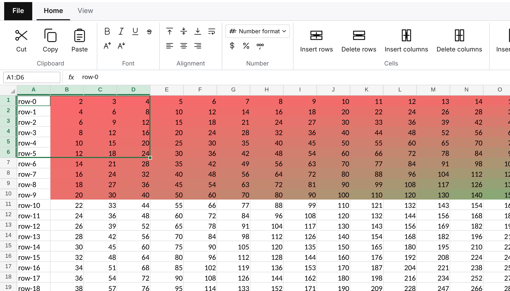
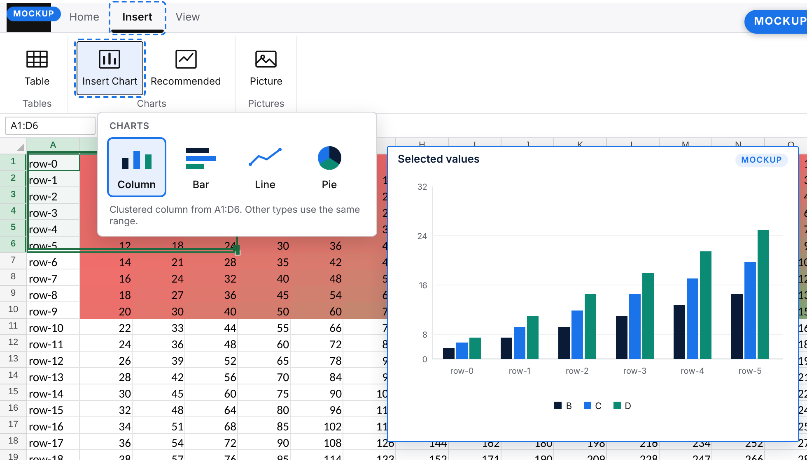
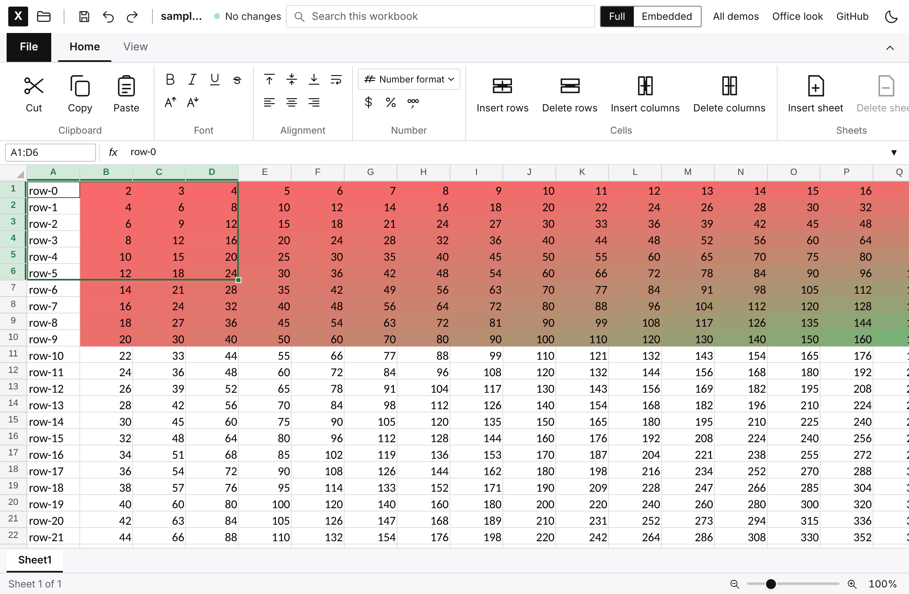
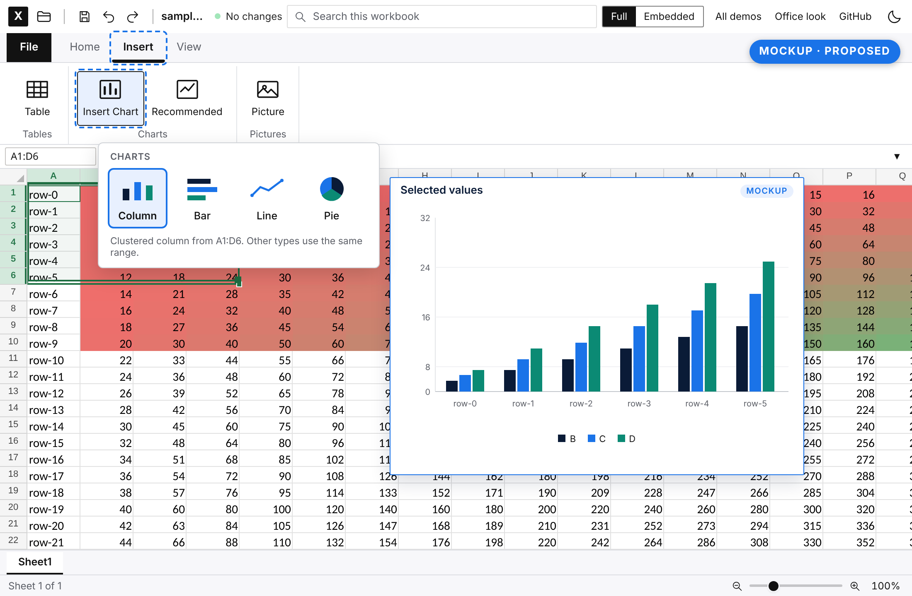

Turn a selected range into a chart, from a new Insert tab
Approved 2026-11-22 (👍); label applied 2026-11-23. Queued for the nightly build. Jared's comment on range-selection responsiveness is proposed separately as #612.
Approve: tap 👍 on the issue · Decline: tap 👎
Close-up of the change




Full screen


Today: Excel has only File, Home and View. There is no Insert tab and no way to make a chart, so a selected range of numbers (A1:D6 here) stays a range of numbers.


Mockup: a new Insert tab with Insert Chart. The gallery offers Column, Bar, Line and Pie; a clustered column chart of A1:D6 lands on the sheet as a movable object.
Tap an image to open it full size.
Why
You can already open a workbook that contains a chart — the painter shipped in M1 — but you cannot make one. Excel, Google Sheets, OnlyOffice and Collabora all put Insert Chart next to the selection. Nitro has no Insert tab on Excel today, so a range of numbers stays a range of numbers.
Definition of done
- Excel gains an Insert tab (File, Home, Insert, View) with a Charts group; Insert Chart opens a gallery of Column, Bar, Line and Pie.
- With a contiguous range of numbers selected, choosing a type inserts a chart object on the sheet, titled from the range, with a legend; the range remains the source.
- The chart is one undo step, can be moved and resized, and is saved as standard chart and drawing parts; files reopen in Excel and LibreOffice without repair and still paint in Nitro.
- Editing a source cell updates the chart after the edit is committed.
- Playwright tests cover each type, undo, move, save round-trip and OOXML/LibreOffice validation; Font, Alignment and Number groups stay at two rows; bundle-budget and all required checks green.
Approve: tap 👍 on the issue · Decline: tap 👎